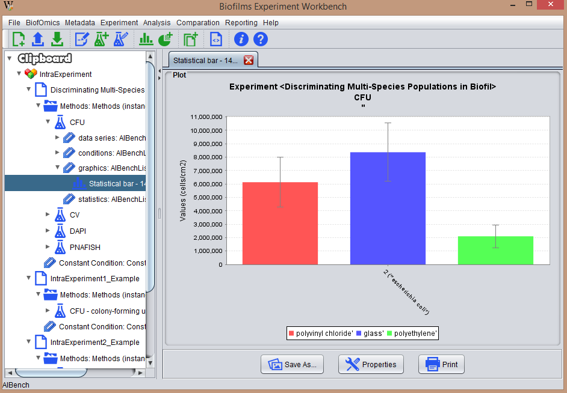

To display a plot, simply go to the Clipboard and select it with the left mouse click. This opens the viewer with the data in the central panel of the main window.
The user may then touch up the plot in terms of legends, axis marks, and other editable properties (see section edit Plot). Also, he may save it as a .png file (see section save Plot).
